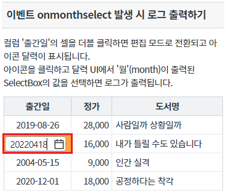
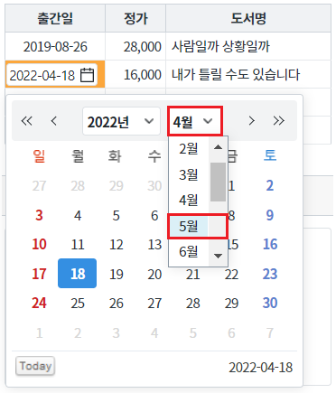
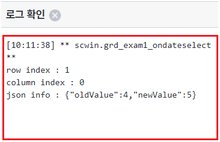
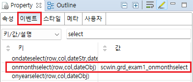

[GridView] Event - onmonthselect (inputType이 calendar이고, 사용자가 달력 UI에서 월(month)을 선택했을 때 발생)
1개요
GridView의 이벤트 onMonthSelect 예제입니다. 이 이벤트는 컬럼의 inputType이 'calendar'로 지정되고, 사용자가 셀의 편집 모드에서 달력 UI의 '월'(month)을 선택했을 때 발생합니다.
월이 출력된 SelectBox에서 값을 선택해야 합니다. (상단 좌우 아이콘을 클릭하여 월이 변경된 경우는 발생하지 않습니다.)
이벤트 핸들러를 지정하면 핸들러에서 아래의 값을 확인할 수 있습니다. - 수정되고 있는 셀의 행 번호 - 수정되고 있는 셀의 열 번호 - 선택 전, 선택 후 월 값이 담긴 JSON
2구현된 기능
이벤트 onmonthselect 발생 시 로그 출력하기
3예제 테스트 방법
3.1이벤트 onmonthselect 발생 시 로그 출력하기
- STEP1. 컬럼 '출간일'의 셀을 편집 모드로 전환합니다.
영역 [이벤트 onmonthselect 발생 시 로그 출력하기]의 GridView를 확인합니다.
컬럼 '도서명'의 2번째 행의 셀을 더블 클릭합니다.
셀이 편집 모드로 전환됩니다.
[브라우저(Chrome) 실행 예시]

- STEP2. 달력 UI에서 '월'(month)을 선택합니다.
편집 모드에서 아이콘 '달력'을 클릭합니다.
달력 UI가 노출됩니다.
[브라우저(Chrome) 실행 예시 - 달력 UI 노출]

상단 월 SelectBox에서 '5월'을 선택합니다.
[브라우저(Chrome) 실행 예시 - 월 선택]

- STEP3. 실행 결과를 확인합니다.
onmonthselect 이벤트가 발생되고 이벤트 핸들러가 실행되어 로그가 출력됩니다.
[브라우저(Chrome) 실행 예시 - 로그 확인]
영역 [로그 확인] 또는 브라우저의 개발자 도구의 콘솔(console)탭에 출력된 로그를 확인합니다.

[로그 예시]
[10:11:38] ** scwin.grd_exam1_ondateselect **
row index : 1
column index : 0
json info : {"oldValue":4,"newValue":5}
4구현 예시
4.1이벤트 onmonthselect의 핸들러 지정하기
STEP1. GridView의 바디 컬럼의 속성을 정의합니다.
[필수] inputType="calendar"
[필수] dataType="date"
[선택] displayFormat="yyyy-MM-dd"
그림 1.웹스퀘어5 SP5 스튜디오의 Design 탭 예시 - 바디 컬럼 선택

그림 2.웹스퀘어5 SP5 스튜디오의 Property View(속성창) 예시 - 바디 컬럼

[소스 코드 예시]
<!-- gridView 의 소스 본문 예시 --> <w2:gridView id="grd_exam1"> <!-- 중략 --> <w2:gBody id="gBody1" style=""> <w2:row id="row2" style=""> <w2:column inputType="calendar" dataType="date" id="published_date" displayFormat="yyyy-MM-dd"></w2:column> <!-- 중략 --> </w2:row> </w2:gBody> </w2:gridView>
- STEP2. GridView의 이벤트 onmonthselect 핸들러를 지정합니다.
예제 파일에서는 핸들러로 사용할 함수명을 scwin.grd_exam1_onmonthselect로 정의하였습니다.
그림 3.웹스퀘어5 SP5 스튜디오의 Property View(속성창)의 이벤트 탭 예시

[소스 코드 예시]
<!-- gridView 의 소스 본문 예시 --> <w2:gridView ev:onmonthselect="scwin.grd_exam1_onmonthselect" id="grd_exam1"> <!-- 중략 --> </w2:gridView>
STEP3. 핸들러 함수 scwin.grd_exam1_onmonthselect를 정의합니다.
[소스 코드 예시]
/** * GridView grd_exam1의 onmonthselect 이벤트 핸들러 */ scwin.grd_exam1_onmonthselect = function (row, col, jsnInfo) { //row : 수정되고 있는 셀의 행 번호 //col : 수정되고 있는 셀의 열 번호 //jsnInfo : 선택 전, 선택 후 월 값이 담긴 JSON //console에 log 출력 console.log(row, col, jsnInfo); };
5주요 API
onmonthselect
[body column] inputType
[body column] dataType
6참고 문서
[웹스퀘어5 SP5 개발 가이드] GridView
링크 : https://docs1.inswave.com/sp5_user_guide/bc10c1b82c9a2a0b#e1c4658baf7e726f
[웹스퀘어5 SP5 개발 가이드] GridView ondateselect & onmonthselect & onyearselect
링크 : https://docs1.inswave.com/sp5_user_guide/86bdcf48029b958b#339fe3d04707cdf1
[예제 가이드]
[GridView] Event - ondateselect (inputType이 calendar이고, 사용자가 달력 UI에서 '일'(day)를 선택했을 때 발생)
7참고 동영상
GridView ondateselect & onmonthselect & onmonthselect
링크 : https://youtu.be/-2yFh9y4rcQ